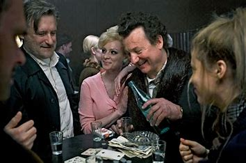
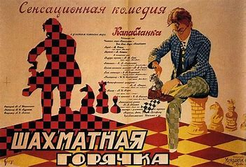

The Queen's Gambit
Polski tytuł "Gambit królowej", to serial Netflix, który opowiada historię utalentowanej szachistki, Beth Harmon.
Searching for Bobby Fischer
Polski tytuł "szachowe dzieciństwo". Film opowiada historię młodego chłopca z talentem do szachów.
Pawn Sacrifice
Polski tytuł "Pionek". Historia Bobby'ego Fischera i jego rywalizacji z Borisem Spasskym.
Queen of Katwe
Polski tytuł "Królowa Katwe". Inspirowana prawdziwą historią Phiony Mutesi z Ugandy.
The Luzhin Defence
Polski tytuł "Obrona Łużyna". Historia ekscentrycznego rosyjskiego szachisty.

The Coldest Game
Polski tytuł "Ukryta gra". Thriller szpiegowski w czasie kryzysu kubańskiego.
Magnus
Dokument o drodze Magnusa Carlsena do tytułu mistrza świata.

Chess Fever
Polski tytuł "Gorączka szachowa". Radziecka krótkometrażowa komedia niema.
Brooklyn Castle
Dokument o szkole w Brooklynie i sukcesach jej uczniów w szachach.